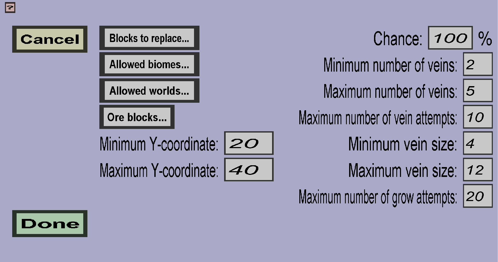

The ore vein generator menu can be used to create or edit an ore vein generator. It should look like this:
An ore vein generator will attempt to replace some Blocks to replace with some Ore blocks, where you can choose which blocks these are, as well as how many veins to spawn and how big those veins should be. Each of these properties will be explained in more detail below.
Veins of ore always need to replace existing blocks. For instance, coal ore and iron ore will replace stone, while quartz ore will replace netherrack. You can choose which block(s) you want to replace by your Ore blocks.
The biomes in which the Ore blocks can be generated. Veins can't be started in forbidden biomes, nor can they grow into forbidden biomes.
The blocks by which the Blocks to replace should be replaced. For instance, vanilla ore blocks are coal ore, iron ore, diamond ore... You can choose any custom block or vanilla block(s) you want. If you choose multiple, you can get mixed veins.
The ore blocks will only be spawned on blocks whose Y-coordinate is between the minimum and maximum Y-coordinate. Note: when the difference between the minimum and maximum Y-coordinate is large, the veins will typically be further apart from each other.
For each chunk, this is the chance that the ore vein generator will not skip the chunk.
These 3 properties determine how many veins of ore the generator will (attempt to) spawn per chunk. For each chunk, the generator will randomly choose a desired number of veins between the minimum number of veins and the maximum number of veins. It will attempt to spawn this number of veins, but this may or may not be possible (for instance when the chunk is in the wrong biome or none of the Blocks to replace can be found). It will do at most Maximum number of vein attempts to spawn a vein of ore. In each attempt, it will try to start a vein of ore in a random position between the minimum and maximum Y-coordinate. The vein will be considered a success if the first ore block is placed.
These 3 properties determine how big each vein will be. For each vein, the generator will randomly choose a desired vein size between the minimum vein size and the maximum vein size. It will attempt to create a vein of this size, but this may or may not be possible (for instance because there is too much gravel or granite near the vein). It will do at most Maximum number of grow attempts to increment the size of the vein. It will start in the first block, and during each grow attempt, it will move in a random direction and attempt to place an ore block at its new location.